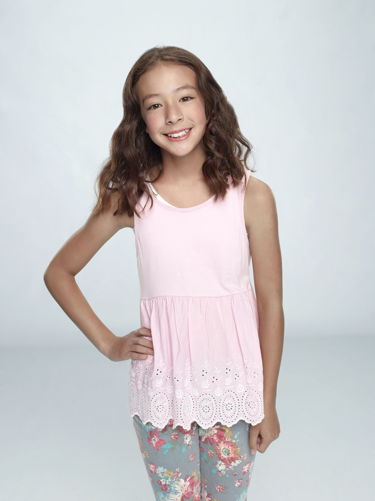

Jay Francis Pritchett is the father of Claire, Mitchell and Joe. He is
the owner of a closet company and is presumably the wealthiest family member as well occasionally the
chieftain of the family in many situations. Jay has a dry and sarcastic sense of humor. Like his son and
daughter, Jay is generally more realistic, mild-mannered, and sensible than his partner, Gloria, who is
unashamed of the fact Jay is many years her senior. A recurring plot involves Jay's relationship with
his son Mitchell, which became more complicated due to Jay's reaction to Mitchell's sexual orientation.
Humor and plot points are also derived from Jay's relationship with his son-in-law Phil; Jay often
mistreats and antagonizes him despite Phil's constant attempts to gain Jay's approval.
Gloria Pritchett is Jay's second wife and mother to Manny and Joe. She is
from Barranquilla, a city in Colombia. She is a very loving wife and mother. At first, the family
(specifically Claire) does not accept her because of her age difference to Jay.
Manuel Alberto Javier "Manny" Delgado, Gloria's son from her first
marriage to Javier, is very outgoing and not the least rather self-conscious. He is very intelligent,
probably second after Alex, but much in a street smart way. He is also mature and intuitive for his age
and is often shown doing adult-like things.
Fulgencio Joseph "Joe" Pritchett is Gloria and Jay's
son. His existence was revealed to the rest of the cast in the first episode of season 4.
Philip Humphrey "Phil" Dunphy is Claire's husband of 25 years who sees
himself as the "cool dad".He dotes on his wife Claire and constantly tries to find ways to bond with his
three kids. He is seen as very competitive, one example being his nature of always beating his son at
basketball. He has a very juvenile attitude, and is referred to by Claire as the "kid [she's] married
to". He uses a parenting method that he calls "peerenting", which is a combination of talking like a
peer but acting like a parent.
Claire Melinda Dunphy, née Pritchett, is the wife of Phil
Dunphy, the daughter of Jay, Mitchell's older sister, Gloria's step-daughter, Manny's step-sister, Joe's
half-sister and the helicopter soccer mom of the Dunphy family and its three very different kids.[10]
She was once a wild child who made a great deal of mistakes over the years, and she is fearful that her
children could make the same mistakes, especially her oldest daughter, Haley. She is often exhausted
from stress created by her family but is still a loving mother.[10] When it comes to her kids she has
difficulty controlling Haley's independence and irresponsibility, Alex's manipulative nature, and Luke's
lack of common sense. She also gets annoyed with her husband, Phil, constantly.
Haley Gwendolyn Marshall is the eldest daughter of Claire and Phil, who is
portrayed as the stereotypical teenager. Haley was born on December 10, 1993. At the start of the
series, Haley is a high school sophomore. Haley is depicted as being rather a flirt, who focuses more on
social status than studies. She is a little naive, especially when it comes to arguing with her parents.
However, she is at times surprisingly cunning, such as when she carves a cell phone out of soap to win a
contest to see who can go the longest without using technology.
Alexandra Anastasia "Alex" Dunphy begins as the almost 13-year-old daughter of Claire and Phil and
turns
17 in season five. Characteristically nerdy but still cute nonetheless, Alex is the most intelligent
of
the three siblings and a polar opposite of Haley. She is very bright and cares much more about her
studies than friends/social life and boys.
Lucas Philip "Luke" Dunphy is Claire and Phil's rambunctious son, who is often doing his own
thing. At times, he can be a troublemaker, once shooting his sister with a toy gun and getting
into a fight with Manny at school. Luke is playful, very innocent and does not always understand
the repercussions of his actions, like most children.
Mitchell Vincent Pritchett, also referred to as Mitch, is Jay's son; Claire's younger brother,
Gloria's step-son, Manny's step-brother, Joe's half-brother, Haley, Alex and Luke's uncle; one of Lily's
fathers; and partner of eight years to Cameron.
Cameron Scott "Cam" Tucker, also referred to as Cam, is Mitchell's husband of eight years, and one of
Lily's fathers, who has a very big dramatic personality. He frequently behaves like a drama queen. His
bubbly outgoing personality contrasts to Mitchell's uptight manner, which causes them to have opposing
character traits.

"Lily" Tucker-Pritchett
Lillian Elizabeth "Lily" Tucker-Pritchett is the adoptive daughter of Cameron and Mitchell. When she was
introduced to the family, they accepted her with open arms, although Mitchell originally wanted to wait
to tell them about her. She is at times doing activities with both of her fathers but remains with Cam
at home while Mitchell works.